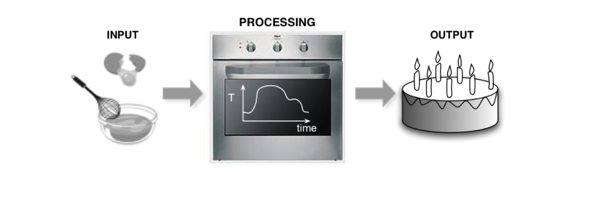
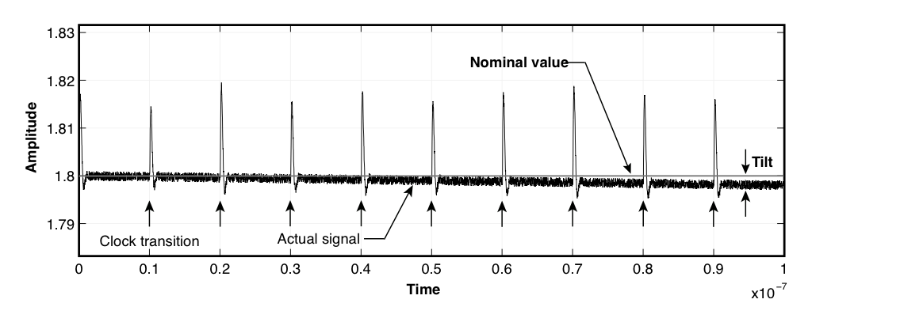
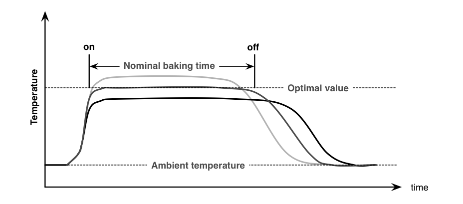
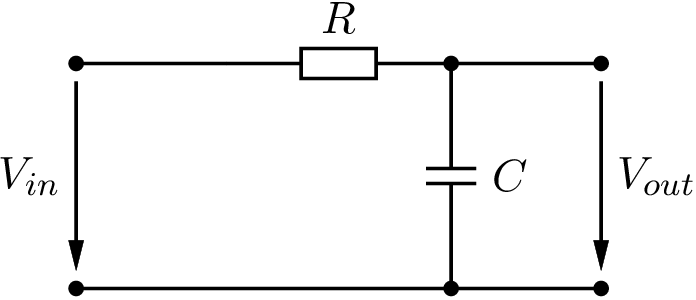
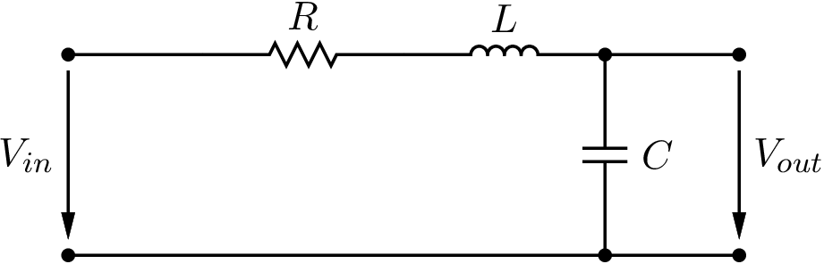

2 Signale und Systeme
2.1 Einfache Signale
Signale repräsentieren Informationen, z.B. Temperatur eines Backofens.
Mögliche Signale sind:
Temperatur des Backofens
Temperatur und Feuchtigkeit des Kuchenteigs
Geschmack / Qualität des Kuchens.

2.2 Signaltypen
Zeitabhängiges Signal, \(f(t)\)
Raumabhängiges Signal, \(f(x_1, x_2, x_3)\)
Lokal oder verteiltes Signal
Kontinuierliches oder diskretes Signal
zeitdiskret
amplitudendiskret (quantisiert)
ge-sampled, samples
Logisches oder binäres Signal
2.3 Konstantes Signal
Ein konstantes Signal für ein elektronisches System korrespondiert nicht mit der mathematischen Definition einer Konstanten.
Versorgungsspannungen und Referenzsignale elektronischer Schaltungen sind immer fehlerbehaftet (statisch und/oder statistisch).
Toleranzen/Fehlergrenzen

2.4 Nominal (nom) und Worst Case (wc)
- Wir definieren nominal als das Ausgangssignal, welches wir bei einem spezifizierten Eingangssignal erwarten; E/A-Verhalten.
- Worst case high und worst case low definieren Signale, die über und unter dem nominalen Signal liegen.

2.5 Zeitkontinuierliche Signale
Wdh. aus Modul GEL2
allgem. Exponentialfunktion
\[\begin{align} x(t) &= \underline{A} \exp(st) \\ \underline{A} &= \Re{\underline{A}} + j \Im{\underline{A}} = A' + j A''\\ s &= \sigma + j \omega \end{align}\]
2.6 Sprungsignale
Wdh. aus Modul SYS
Plötzliche Amplitudenänderung, unstetig
Sprungfunktion
\[\begin{equation} \epsilon(t) = \begin{cases} 0 & \mbox{für } t < 0 \\ 1 & \mbox{für } t > 0 \end{cases} \end{equation}\]
- Rechteckfunktion
\[\begin{equation} rect(t) = \begin{cases} 0 & \mbox{für } |t| > \frac{1}{2} \\ 1 & \mbox{für } |t| < \frac{1}{2} \end{cases} \end{equation}\]
- Signumfunktion
\[\begin{equation} sgn(t) = \begin{cases} -1 & \mbox{für } t < 0 \\ 1 & \mbox{für } t > 0 \end{cases} \end{equation}\]
- Dreieckfunktion
\[\begin{equation} tri(t) = \begin{cases} 1 - |t| & \mbox{für } |t| \leq 1 \\ 0 & \mbox{für } |t| \geq 1 \end{cases} \end{equation}\]
2.7 Zeitdiskrete Signale
- Exponentialfolge
\[\begin{equation} x(n) = A \, \exp(snT) = A \, \exp(\sigma n T) \, \exp(j \omega n T) \end{equation}\]
- Sinus- und Kosinusfolge
\[\begin{equation} x'(n) = A' \, \cos(\omega n T) = A' \, \cos(\Omega T) \end{equation}\]
Sprungfolge und verwandte Folgen
Abgetastetes Signal (sampled)
Dirac-Impuls
2.8 Stochastische Signale
Wahrscheinlichkeitsdichtefunktion, vgl. Halbleiterphysik Aufenthaltswahrscheinlichkeit
Erwartungswert (Mittelwert, Varianz)
Autokorrelationsfunktion
2.9 Rauschen
Rauschen ist ein spezieller Signaltyp, es ist ein statistischer Prozess und beinhaltet keine Informationen.
Rauschen stört bzw. überlagert die eigentliche Information, die mit einem Signal transportiert wird.
Signal-zu-Rausch-Verhältnis (Signal-to-Noise Ratio, SNR, engl.)
\[\begin{equation} SNR = \frac{P_{signal}}{P_{noise}} = \frac{\overline{f^2_{sig}(t)}}{\overline{v^2_{noise}(t)}} \end{equation}\]
2.10 LTI System
Parseval’sches Theorem
\[\begin{equation} \int_{-\infty}^{\infty} \lvert f(t) \lvert^2 dt = \frac{1}{2\pi} \int_{-\infty}^{\infty} \lvert F(j \omega) \lvert^2 d \omega \end{equation}\]
\[\begin{align} \mbox{Energie:} \quad E_f &= \int_{-\infty}^{\infty} \lvert f(t) \lvert^2 dt \\ \mbox{Leistung:} \quad P_f &= \lim\limits_{T \to \infty} \frac{1}{T} \int_{-T/2}^{T/2} \lvert f(t) \lvert^2 dt \end{align}\]
Wiener-Khintchine Theorem (Autokorrelation)
\[\begin{equation} r_{ff}^E (t) = \int_{-\infty}^{\infty} f(t) f(t+\tau) dt = \int_{-\infty}^{\infty} \lvert F(j\omega) \lvert^2 e^{j \omega t} df \end{equation}\]
Mittlerer Erwartungswert
\[\begin{align} \overline{y(t)} &= E \{ y(t) \} = E \left\{\int_{-\infty}^{\infty} u(t)h(t-\tau) dt \right\} \\ r_{uy}(t) &= r_{uu}(t) \ast h(t) \\ S_{uy}(j\omega) &= S_{uu}(j \omega) \cdot H(j \omega) \end{align}\]
Wiener-Lee Beziehung
\[\begin{align} r_{yy}(t) &= r_{uu}(t) \ast r_{hh}^E (t) \\ S_{yy}(j \omega) &= S_{uu}(j \omega) \cdot \lvert H(j \omega) \lvert^2 \end{align}\]
2.11 PSD zu SNR
Leistungsdichtespektrum (Power Spectral Density, PSD, engl.)
\[\begin{align} \overline{v_{noise}^2(t)} &= r_{yy}(0) = \int_{-\infty}^{\infty} S_{yy}(j \omega) df \\ \overline{v_{noise}^2(t)} &= \int_{-\infty}^{\infty} S_{uu}(j \omega) \cdot \lvert H(j \omega) \lvert^2 \end{align}\]
Signal-zu-Rausch Verhältnis (Signal-to-Noise Ratio, SNR, engl.)
\[\begin{equation} SNR = \frac{P_{signal}}{P_{noise}} = \frac{\overline{f^2_{sig}(t)}}{\overline{v^2_{noise}(t)}} \end{equation}\]
2.12 Rauschen eines passiven Tiefpassfilters

\[\begin{equation} \overline{v_{out}^2} = \int_{f_1}^{f_2} 4 kTR \, \left\lvert \frac{1}{1 + j 2 \pi f \cdot RC} \right\lvert^2 df = 4kTR \int_{f_1}^{f_2} \frac{1}{1+(2\pi f RC)^2} df \end{equation}\]
\[\begin{equation} \int \frac{1}{1+x^2} dx = \arctan(x) \end{equation}\]
2.13 Total Integrated Noise
\[\begin{align} \overline{v_{out,tot}^2} &= \int_{0}^{\infty} 4 kTR \, \left\lvert \frac{1}{1 + j 2 \pi f \cdot RC} \right\lvert^2 df \\ &= 4kTR \int_{f_1}^{f_2} \frac{1}{1 + (2 \pi f RC)^2} df \\ &= 4kTR \frac{1}{4 RC} = \frac{kT}{C} \end{align}\]
2.14 LC Tiefpassfilter

\[\begin{align} \overline{v_{out,tot}^2} &= \int_{0}^{\infty} 4 kTR \, \left\lvert \frac{1}{1+\frac{s}{\omega_p Q_p} + \frac{s^2}{\omega_p^2}} \right\lvert^2 df \\ &= 4 kTR \frac{\omega_p Q_p}{4} = \frac{kT}{C} \end{align}\]
\[\begin{equation} \omega_p = \frac{1}{\sqrt{LC}} \quad Q_p = \frac{1}{R}\sqrt{\frac{L}{C}} \quad \omega_p Q_p \quad \frac{1}{RC} \end{equation}\]